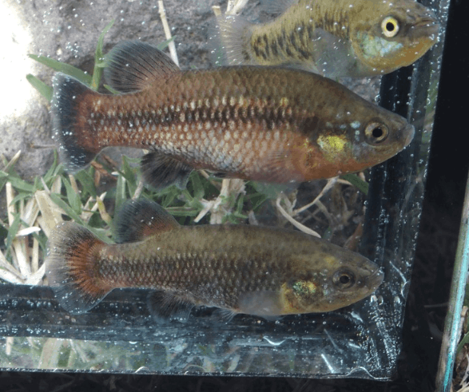

Systématique
- Ordre : Cyprinodontiformes
- Famille : Goodeidae
- Genre : Characodon
- Espèce : C. audax
- Auteur : Smith & Miller, 1986

Characodon audax est l'une des espèces les plus emblématiques et les plus menacées de la famille des Goodeidae. Originaire de l'État de Durango au Mexique, elle se distingue par sa coloration vive, notamment chez les mâles de certaines populations (comme celle d'El Toboso), qui arborent un rouge intense sur la partie inférieure du corps et les nageoires.
C'est un petit poisson au corps trapu et robuste. Les femelles atteignent environ 5 cm, tandis que les mâles sont plus petits, mesurant généralement entre 3,5 et 4,5 cm. Le genre Characodon est considéré comme l'un des plus primitifs au sein de la sous-famille des Goodeinae, représentant un chaînon évolutif important.
Le nom d'espèce audax (audacieux) reflète le tempérament de ce poisson. Les mâles sont particulièrement territoriaux et agressifs entre eux, surtout en période de reproduction. Ils passent une grande partie de leur temps à défendre un petit territoire contre les rivaux.
En aquarium, cette agressivité intra-spécifique impose de fournir de nombreuses cachettes et un volume suffisant pour un groupe. C'est une espèce qui vit dans des sources d'eau claire et calme, souvent à proximité de zones riches en végétation. Elle est sensible à la dégradation de la qualité de l'eau et nécessite une maintenance rigoureuse pour prospérer en captivité.
Mode : Vivipare matrotrophe.
La reproduction suit le cycle classique des goodeids avec une fertilisation interne via l'andropode. La gestation est plus courte que chez d'autres genres, durant environ 40 à 50 jours selon la température. Les alevins sont nourris par la mère via des trophotaeniae.
Les portées sont modestes, comptant généralement entre 5 et 20 alevins. Les jeunes naissent à une taille d'environ 10 mm. Le cannibalisme des parents envers les jeunes est fréquent chez cette espèce ; il est donc crucial d'offrir un bac très densément planté (mousses, Ceratophyllum) ou d'isoler les femelles proches du terme pour sauvegarder la descendance.
Dimorphisme sexuel : Très marqué. Le mâle est plus petit, possède un andropode et affiche des couleurs rouges ou orangées intenses sur le ventre et les nageoires anale et caudale. La femelle est plus grande, plus terne (teinte grisâtre/olivâtre) avec des taches sombres irrégulières sur les flancs et une nageoire anale normale.
Espérance de vie : 3 à 5 ans en aquarium. Une période de repos hivernal avec des températures plus basses est nécessaire pour garantir une longévité maximale.
L'espèce est endémique d'une zone très restreinte dans le bassin du Rio Mezquital, au Durango. Elle peuple principalement des sources isolées (ojos de agua) et des petits étangs alimentés par ces sources, comme à El Toboso. L'eau y est cristalline, riche en oxygène et souvent saturée en minéraux.
Le substrat est composé de roches, de sable et de dépôts organiques. La végétation aquatique y est souvent dense. Malheureusement, ces sources sont menacées par le pompage pour l'agriculture, la pollution et l'introduction d'espèces envahissantes. L'espèce est considérée comme extrêmement vulnérable dans son milieu naturel.
Répartition

Origine naturelle :
- Mexique : État de Durango (localités isolées dans le bassin du Rio Mezquital).
- Localité type : Ojo de Agua de El Toboso, Durango, Mexique.
Statut UICN : En danger critique (Critically Endangered). Plusieurs populations ont déjà disparu. La survie de l'espèce dépend de l'aquariophilie spécialisée (Goodeid Working Group).
Paramètres de maintenance
Température : 18 à 23 °C (Une chute hivernale vers 15-16 °C est recommandée).
pH : 7,0 à 8,0.
GH : 10 à 25 °dGH (eau dure).
Courant : Faible.
Volume conseillé : Minimum 60-80 L pour un petit harem (1 mâle / 2-3 femelles).
Régime alimentaire
Régime : Omnivore à tendance insectivore.
En aquarium, il nécessite une alimentation variée. Il apprécie particulièrement les petites proies vivantes ou congelées (daphnies, artémias, vers de vase). Il accepte les nourritures sèches de qualité, mais une part végétale (spiruline) doit être intégrée pour maintenir l'éclat des couleurs des mâles et la santé générale.